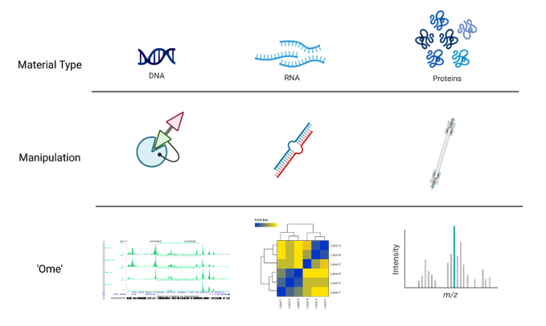
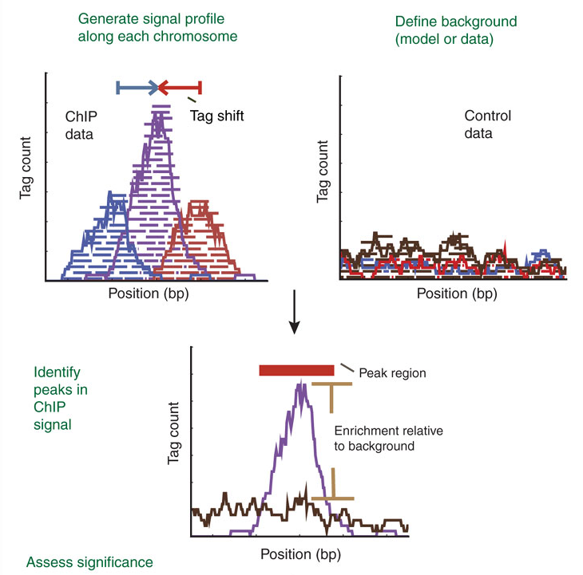

# Addition
14 + 7[1] 21# Division
14 / 7[1] 2# Square root
sqrt(14)[1] 3.741657‘Omics’ as disciplines work to answer questions regarding specific ‘omes’. These questions are enabled by omics experiments; in most cases, these will be sequencing- or mass-spectrometry based.
The identification of a suitable model, types and numbers of samples, the process of extraction and purification of our target ‘ome’, and finally its reformulation into a sequenceable product, i.e. a library, shape the final bioinformatic dataset and place limits on the possible questions we will be able to ask of it.
For example, in the case of RNA-seq, phenol-based extraction and precipitation will yield results that are not always comparable with total RNA extraction with a spin column. Even more, the contingent decision to perform ribodepletion or enrichment for polyadenylated transcript will have an impact even on simple gene expression analyses.
Summing up, an Omics experiment is designed starting from a question, selecting the sample(s), wet lab procedure and library preparations that will enable the most truthful, informative dataset to be built.

In this context, we chose to deal with a Chromatin Immuno-precipitation (ChIP from now on) assay.
💭 Suppose you have found an interesting, new histone variant, and managed to produce a strong antibody against it. You want to know where it’s located in the genome of your cells of interest (say, tumor cells), to start deducing its function.
ChIP, coupled to sequencing (ChIP-seq), allows you to approach the question, genome-wide.
It works by extracting chromatin (DNA bound to protein), fragmenting it, and selecting the protein or protein variant of interest from this complex mixture with an antibody in some way specific for it. The subset of genome you will have isolated will constitute the sequences you expect your variant to bind, informing your inferences regarding its function.
ChIP-seq use in mapping histone modifications has been seminal in epigenetics research! (Ku et al., 2011)
Here you can see a recap of the major steps:
+ Cross-linking: add Formaldehyde
+ Cell lysis (breakdown of cell membranes)
+ Fragmentation of DNA fragments (shearing), e.g. digestion with specific endonuclease enzymes (dpn1) or sonication
+ Addition of specific bead-coupled antibody against the protein of interest, separating it from the mixture
+ Separate DNA from the protein (reverse cross-linking), and DNA purification
+ DNA fragment amplification, library construction
+ Library sequencing by NGS (essentially Illumina)
Besides characterizing binding patterns in general, a common goal in ChIP-seq experiments is to identify changes in protein binding patterns between conditions, an application known as differential binding.
Effective analysis of ChIP-seq data requires sufficient coverage by sequence reads (sequencing depth). It mainly depends on the size of the genome, and the number and size of the binding sites of the protein.
For mammalian (or any species with a relatively large genome) transcription factors (TFs) and chromatin modifications such as enhancer-associated histone marks: 20 million reads are adequate
Proteins with more binding sites (e.g., RNA Pol II) or more promiscuous factors (e.g. CTCF) need more reads, up to 60 million for mammalian ChIP-seq
Sequencing depth rules of thumb: >10M reads for narrow peaks, >20M for broad peaks (you will understand better this concept later in the Peak Calling section)
Another consideration is about sequence modality: long & paired-end reads are useful, but not essential - they may however help in specific, high-precision binding site discovery. Most of the times, ChIP-seq can be performed in single-end mode.
About the number of technical replicates, unlike with RNA-Seq, more than two replicates do not significantly increase the number of identified peaks.
A successful ChIP-seq experiment must have the appropriate controls to optimize signal-noise ratio. Well-made controls help eliminate false positives. In fact, there is always some signal on open chromatin. This may be due to multiple factors, but can be boiled down to three reasons: A) non-specific binding from the antibody can precipitate random sequences B) digestion, sonication, or any other method of shearing will introduce biases towards certain sequences C) different operators will perform the same protocol slightly differently, yielding higher or lower signal/noise ratios.
The following controls are often used to abate these biases:
An “input” DNA sample in which a library is generated from DNA that has been cross-linked and sonicated but not immuno-precipitated. It controls for the bias introduced before even immunoprecipitating, i.e. from sonication.
An IgG “mock”-ChIP, using an antibody that will not bind to nuclear proteins and should generate random immuno-precipitated DNA. It controls for non-specific sequences that precipitate alongside the target protein, but are not bound by it.
A Spike-In can also be introduced, using different genomes (e.g. Drosophila in a Human experiment) to control for handling variability between users, or batch differences between reagents. This helps dampen these confounders.
Input DNA control is ideal in most of the cases. Indeed, one problem with IgG control is that if too little DNA is recovered after immuno-precipitation, sequencing library will be of low complexity and binding sites identified using this control could be biased. Read this biostars post for discussion.
NGS technologies (Illumina/PacBio/Ultima/BGI) allow the processing of millions of synthesis reactions in parallel, resulting in high throughput, higher sensitivity, speed and reduced cost compared to first generation sequencing technologies (e.g., Sanger method).
Given the vast amounts of quantitative sequencing data generated, NGS-based methods rely on resource-intensive data processing pipelines to analyze data.
In addition to the sequence itself, and unlike Sanger sequencing, the high-throughput nature of NGS provides quantitative information (depth of coverage) due to the high level of sequence redundancy at a locus.
There are short-read and long-read NSG approaches. Short reads of NGS range in size from 75 to 300 bp depending on the application and sequencing chemistry. NGS is taken to mean second generation technologies, however 3G and 4G technologies have since evolved (enable longer read sequences in excess of 10 kilobases).
Among 2G NGS chemistries, Illumina sequencing by synthesis (SBS) is the most widely adopted worldwide, responsible for generating more than 90% of the world’s sequencing data.

With this wealth of insights about the experiment at hand, we can now move forward to obtain the necessary equipment for analyzing this type of data effectively. 😎
First of all, let’s start assembling the tools that you will need for this workshop! While R by itself has no particular user interface, RStudio is the tool that allows you to click and actually ‘see’ what you are doing. RStudio is an integrated development environment (IDE) and will be our primary tool to interact with R.
You can follow two strategies:
R and RStudio on your machineNote that the first option will require a bit more time and effort. To get started with RStudio Cloud (now Posit Cloud), click on this link and create a Posit free account. Once you completed your registration, you are redirected to Your Workspace. To start a new R project, you can click on New Project > New RStudio Project. This will open RStudio on the Cloud.
Now that you have RStudio open, you should see something similar to this:
The RStudio interface is composed of quadrants:
The Console window: located in the bottom-left, it’s where you will find the output of your coding, and it’s also possible to type R code interactively on the console.
The Files / Plots / Packages / Help / Viewer window: located in the bottom-right, it displays your current file system (on the Cloud), which is pointed to the position where your Rproject you just created lives.
The Files pane lists the files and folders in your root directory (i.e. where by default RStudio saves your analyses).
Another important pane is Plots, designed to show you any plots you have created.
The Package pane instead allows to manage all the additional tools you can import and use when you perform your analyses. They are useful to enhance the basic R functions from different aspects.
If you need H E L P, you can use the Help pane: you can search for specific topics, for instance how a computation works and other kinds of documentation.
The Environment / History / Connections / Tutorial window: you can find it in the top right position.
It is pointed to the Environment pane, that is a place where you can find all the objects available for computation (e.g. datasets, plots, lists, etc.).
The History pane keeps whatever computation you run in the console. You can re-run the computation stored in the history and you can also copy the past code into an existing or new R Script.
The most basic computation you can do in R is arithmetic operations. Let’s take a look at the following examples:
# Addition
14 + 7[1] 21# Division
14 / 7[1] 2# Square root
sqrt(14)[1] 3.741657But R is much more than an enormous calculator! Besides arithmetic operations, there are also logical queries you can perform. Logical queries always return either the value TRUE or FALSE.
#1 Is it TRUE or FALSE?
3 == 3[1] TRUE#2 Is 45 bigger than 55?
50 > 56[1] FALSE#3 Are these two words NOT the same?
"Gene" != "gene"[1] TRUENotice that in logical queries,
equal tois represented by==and not by=, which instead is used to assign a value to an object. However, in practice, most R programmers tend to avoid=since it can easily lead to confusion with==.
<-Assigning values to objects is another common task that we will perform. What can be an object ?
In short, an object can enclose different things which form part of your data analysis. For example, objects are useful to store results that you want to process further in later steps of the analysis. We have to use the assign operator <- to assign a value to an object. Let’s have a look at an example:
# Let's assign the gene "TP53" to the "genes" object
genes <- "TP53"Now the object genes carries the value "TP53". If you check out the Environment pane, you should see that the gene object appeared there. We can also print values of an object in the console by simply typing the name of the object genes and hit Return ↵.
# What are my genes?
genes[1] "TP53"To create objects with multiple values, we can use the function c() which stands for ‘concatenate’:
# Adding some more genes to the object
genes <- c("TP53",
"TNF",
"EGFR",
"VEGFA",
"APOE",
"IL6")
# Here are my genes
genes[1] "TP53" "TNF" "EGFR" "VEGFA" "APOE" "IL6" To concatenate values into a single object, we need to use a comma , to separate each value. Otherwise, R will report an error back.
genes <- c("TP53" "TNF")Error: <text>:1:19: unexpected string constant
1: genes <- c("TP53" "TNF"
^Don’t worry about it! R’s error messages tend to be very useful and give meaningful clues to what went wrong. In this case, we can see that something ‘unexpected’ happened and it shows where our mistake is.
listValues inside objects are meant to be of the same type, for instance numeric or character. Consequently, mixing different types of data into one object is likely a bad idea. However, there is an exception: a list object can hold other objects of different data types.
data <- list(genes,
c(1, 2, 3, 4),
c("TGFB1", 5, "AKT1", 6))
data[[1]]
[1] "TP53" "TNF" "EGFR" "VEGFA" "APOE" "IL6"
[[2]]
[1] 1 2 3 4
[[3]]
[1] "TGFB1" "5" "AKT1" "6" You will notice in this example that we do not use
""for each value in the list. This is becausegenesis not acharactervalue, but an object. When we refer to objects, we do not need quotation marks.
Looking at the list item in the environment page, you can see that the object data is classified as a List of 3, and if you click on the blue icon, you can inspect the different objects inside.

We mention the term ‘function’ multiple times, but what are functions and why we need them? In simple terms, functions are objects that contain lines of codes and can be seen as shortcuts for our programming. They are useful to save space and time and to make our code more readable and reliable. We will make an example to understand better, by calculating the arithmetic mean:
# We create an object that stores our values
values <- c(1, 5, 7, 4, 13, 2, 9, 5)
# Manually compute the sum
sum <- 1 + 5 + 7 + 4 + 13 + 2 + 9 + 5
# Divide the sum by the number of values
mean <- sum / 8
mean[1] 5.75Or…
# Use the mean function that is part of the R base package
mean(values)[1] 5.75# Let's check that the two methods coincide
sum / 8 == mean(values)[1] TRUEThe last type of objects we will see (of course there are far many more types…) is the data.frame, one of the most abundantly used in R. Think of data.frames as the R equivalent of Excel spreadsheets, so a way to store tabular data. As we will see later, pretty much all the data we are going to handle will be in the form of a data.frame or some of its other variations.
# Let's create and display a data frame (a table) with four rows and two columns
data.frame("Class"=c("a","b","c","d"), # First column
"Quantity"=c(1,10,4,6)) # Second column Class Quantity
1 a 1
2 b 10
3 c 4
4 d 6We have instructed R to create a data.frame object. We will give more of these commands from now on!
You might want to save your code for a later use, especially when it starts to become long and complex. In this case, it is not very convenient to write it in the console, which does not keep track of it (as far as you don’t go back in the History) and does not allow to edit the code and save changes.
So, instead, we can write code into an R Script, which is a document that RStudio recognizes as R programming code and has .R as extension. Files that are not R Scripts, like .txt, .rtf or .md, can also be opened in RStudio, but any code written in it will not be automatically recognized.
When opening an R script or creating a new one, it will display in the Source window. The term ‘source’ can be understood as any type of file, e.g. data, programming code, notes, etc.
Now let’s create an R script, by selecting
File > New File > R Scriptin the menu bar, or using the keyboard shortcutCtrl + Shift + Non PC andCmd + Shift + Non Mac. We will name it “Day1.R”.Now you can go in the History, copy the lines previously coded (by clicking on the first line you want to copy, then pressing
Shift + Down arrow, up to the last line of code) and then clickTo Source.❗️ Writing some code in your R script will NOT automatically run it! If you tried pressing
Return ↵, you would only add a new line. Instead, you need to select the code you want to run and pressCtrl+Return ↵(PC) orCmd+Return ↵(Mac).
The analyses we are going to perform require specific functions that are not included in the basic set of functions in R. These functions are collected in specific packages. R packages are extensions to the R programming language that contain code, data and documentation which help us performing standardized workflows. In the chunk below, we instruct R to install the packages that we will need later on through the workshop.
Copy this chunk and paste it to your R script.
# Install packages from Bioconductor
if (!require("BiocManager", quietly = TRUE))
install.packages("BiocManager")
# Install packages from CRAN
install.packages("tidyr")
install.packages("dplyr")
install.packages("googledrive")
# For differential analysis
BiocManager::install("vsn")
BiocManager::install("edgeR")
install.packages("statmod")
# For visualizations
install.packages("hexbin")
install.packages("pheatmap")
install.packages("RColorBrewer")
install.packages("ggrepel")
install.packages("circlize")
# For downstream analysis
install.packages("gprofiler2")
# Clean garbage
gc()During the installation, you will see many messages being displayed on your R console, don’t pay too much attention to them unless they are red and specify an error!
If you encounter any of these messages during installation, follow this procedure here:
# R asks for package updates, answer "n" and type enter
# Question displayed:
Update all/some/none? [a/s/n]:
# Answer to type:
n
# R asks for installation from binary source, answer "no" and type enter
# Question displayed:
Do you want to install from sources the packages which need compilation? (Yes/no/cancel)
# Answer to type:
noWhile the packages are installed, we can start diving into the ChIP-seq core processing steps.
The raw output of any sequencing run consists of a series of sequences (called tags or reads). These sequences can have varying length based on the run parameters set on the sequencing platform. Nevertheless, they are made available for humans to read under a standardized file format known as FASTQ. This is the universally accepted format used to encode sequences after sequencing. An example of real FASTQ file with only two reads is provided below.
@Seq1
AGTCAGTTAAGCTGGTCCGTAGCTCTGAGGCTGACGAGTCGAGCTCGTACG
+
BBBEGGGGEGGGFGFGGEFGFGFGGFGGGGGGFGFGFGGGFGFGFGFGFG
@Seq2
TGCTAAGCTAGCTAGCTAGCTAGCTAGCTAGCTAGCTAGCTAGCTAGC
+
EEEEEEEEEEEEEEEEEEEEEEEEEEEEEEEEEEEEEEEEEEEEEEFASTQ files are an intermediate file in the analysis and are used to assess quality metrics for any given sequence. The quality of each base call is encoded in the line after the + following the standard Phred score system.
💡 Since we now have an initial metric for each sequence, it is mandatory to conduct some standard quality control evaluation of our sequences to eventually spot technical defects in the sequencing run early on in the analysis.
Computational tools like FastQC aid with the visual inspection of per-sample quality metrics from NGS experiments. Some of the QC metrics of interest to consider include the ones listed below, on the left are optimal metric profiles while on the right are sub-optimal ones:
 This uses box plots to highlight the per-base quality along all reads in the sequencing experiment, we can notice a physiological drop in quality towards the end part of the read.
This uses box plots to highlight the per-base quality along all reads in the sequencing experiment, we can notice a physiological drop in quality towards the end part of the read.
 Here we are plotting the distribution of Phred scores across all identified sequences, we can see that the high quality experiment (left) has a peak at higher Phred scores values (34-38).
Here we are plotting the distribution of Phred scores across all identified sequences, we can see that the high quality experiment (left) has a peak at higher Phred scores values (34-38).
 Here we check the sequence (read) base content, in a normal scenario we do not expect any dramatic variation across the full length of the read since we should see a quasi-balanced distribution of bases.
Here we check the sequence (read) base content, in a normal scenario we do not expect any dramatic variation across the full length of the read since we should see a quasi-balanced distribution of bases.
 GC-content refers to the degree at which guanosine and cytosine are present within a sequence, in NGS experiments which also include PCR amplification this aspect is crucial to check since GC-poor sequences may be enriched due to their easier amplification bias. In a normal random library we would expect this to have a bell-shaped distribution such as the one on the left.
GC-content refers to the degree at which guanosine and cytosine are present within a sequence, in NGS experiments which also include PCR amplification this aspect is crucial to check since GC-poor sequences may be enriched due to their easier amplification bias. In a normal random library we would expect this to have a bell-shaped distribution such as the one on the left.
 This plot shows the degree of sequence duplication levels. In a normal library (left) we expect to have low levels of duplication which can be a positive indicator of high sequencing coverage.
This plot shows the degree of sequence duplication levels. In a normal library (left) we expect to have low levels of duplication which can be a positive indicator of high sequencing coverage.
 In NGS experiments we use adapters to create a library. Sometimes these can get sequenced accidentally and end up being part of a read. This phenomenon can be spotted here and corrected using a computational approach called adapter trimming.
In NGS experiments we use adapters to create a library. Sometimes these can get sequenced accidentally and end up being part of a read. This phenomenon can be spotted here and corrected using a computational approach called adapter trimming.
The read trimming step consists of removing a variable portion of read extremities that contain adapters/have suboptimal quality indicated by the Phred score. Tools like Cutadapt can be used to perform this task after read QC, and FASTQC can be eventually run just after read trimming to double-check positive effect of getting rid of bad sequences. Note that after this step, reads might have different lengths.
Now that we have assessed the quality of the sequencing data, we are ready to align the reads to the reference genome in order to map the exact chromosomal location they derive from.
A reference genome is a set of nucleic acid sequences assembled as a representative example of a species’ genetic material. It does not accurately represent the set of genes of any single organism, but a mosaic of different nucleic acid sequences from each individual. For each model organism, several possible reference genomes may be available (e.g. hg19 and hg38 for human).
As the cost of DNA sequencing falls, and new full genome sequencing technologies emerge, more genome sequences continue to be generated. New alignments are built and the reference genomes improved (fewer gaps, fixed misrepresentations in the sequence, etc). The different reference genomes correspond to the different released versions (called “builds”).
A mapper tool takes as input a reference genome and a set of reads. Its aim is to match each read sequence with the reference genome sequence, allowing mismatches, indels and clipping of some short fragments on the two ends of the reads.

Among the different mappers, Bowtie2 is a fast and open-source aligner particularly good at aligning sequencing reads of about 50 up to 1,000s of bases to relatively long genomes. By default, it performs a global end-to-end read alignment and by changing the settings, it also supports the local alignment mode. You can understand the difference by looking at this scheme:

Bowtie2 can identify reads that are:
uniquely mapped: read pairs aligned exactly 1 time
multi-mapped: reads pairs aligned more than 1 time
unmapped: read pairs non concordantly aligned or not aligned at all
Multi-mapped reads can happen because of repetition in the reference genome (e.g. multiple copies of a gene), particularly when reads are small. It is difficult to decide where these sequences come from and therefore most of the pipelines ignore them.
Checking the mapping statistics is an important step to perform before to continue any analyses. There are several potential sources for errors in mapping, including (but not limited to):
PCR artifacts: PCR errors will show as mismatches in the alignment
sequencing errors
error of the mapping algorithm due to repetitive regions or other low-complexity regions.
A low percentage of uniquely mapped reads is often due to (i) either excessive amplification in the PCR step, (ii) inadequate read length, or (iii) problems with the sequencing platform.
70% or higher is considered a good percentage of uniquely mapped reads over all the reads, whereas 50% or lower is concerning. The percentages are not consistent across different organisms, thus the rule can be flexible!
But where the read mappings are stored?
A BAM (Binary Alignment Map) file is a compressed binary file storing the read sequences, whether they have been aligned to a reference sequence (e.g., a chromosome), and if so, the position on the reference sequence at which they have been aligned.
A BAM file (or a SAM file, the non-compressed version) consists of:
A header section (the lines starting with @) containing metadata, particularly the chromosome names and lengths (lines starting with the @SQ symbol)
An alignment section consisting of a table with 11 mandatory fields, as well as a variable number of optional fields.

Questions:
# Sequences and quality information# Mapping information, Location of the read on the chromosome, Mapping quality, etcThe read count data generated by ChIP-seq is massive. In order to predict the actual sites where the protein of interest is likely to bind, different peak calling methods have been developed. Peaks are regions with significant number of mapped reads that produce a pileup.
ChIP-seq is most often performed with single-end reads, and ChIP fragments are sequenced from their 5’ ends only. This creates two distinct peaks of read density! One on each strand with the binding site falling in the middle of these peaks. The distance from the middle of the peaks to the binding site is often referred to as the “shift”.

Forward (blue) and reverse (maroon) Read Density Profiles derived from the read data contribute to the Combined Density Profile (orange). Nat. Methods,2008
The most popular tool to find peaks is MACS2 which empirically models the shift size of ChIP-Seq reads, and uses it to improve the spatial resolution of predicted binding sites. Briefly, these are the steps performed by MACS:
removing duplicate reads
modelling the shift size
scaling the libraries with respect to their controls
performing peak detection
estimating False Discovery Rate (FDR)
The peak detection identifies areas in the genome that have been enriched with mapped reads.
Enrichment = Immunoprecipitation reads/background reads (mock IP or untagged IP).
If an experimental control data is NOT available, a random genomic background is assumed.

Finally, peaks are filtered to reduce false positives and ranked according to relative strength or statistical significance.
An important factor that influences the sequencing depth that is required for a ChIP–seq experiment is whether the protein (or chromatin modification) is a point-source factor, a broad-source factor or a mixed-source factor.
Point sources occur at specific locations in the genome. This class includes sequence-specific transcription factors as well as some highly localized chromatin marks, for example, those associated with enhancers and transcription start sites. They will generate more often narrow peaks.
Broad sources are generally those that cover extended areas of the genome, such as many chromatin marks (for example, histone H3 lysine 9 trimethylation (H3K9me3) marks). They will give raise to broad peaks.
Mixed-source factors, such as RNA polymerase II, yield both types of peaks. As expected, broad-source and mixed-source factors require a greater number of reads than point-source factors. Peaks generated will have a mixed profile between narrow and broad.

After peak calling, it’s important to check some metrics that are indicative of the overall quality of the ChIP-seq experiment. Here are two of the most useful:
FRiP score: reports the percentage of reads overlapping within called peak. Can be useful to understand how much the IP sample is “enriched”.
Strand cross-correlation: high-quality ChIP-seq produces significant clustering of enriched reads at locations bound by the protein of interest, that present as a bimodal density profile on the forward and reverse strands (peaks). The cross-correlation metric calculates how many bases to shift the bimodal peaks in order to get the maximum correlation between the two read clusters, which corresponds to the predominant fragment length.
Most high-throughput data can be viewed as a continuous score over the bases of the genome. In case of RNA-seq or ChIP-seq experiments, the data can be represented as read coverage values per genomic base position.
This sort of data can be stored as a generic text file or can have special formats such as Wig (stands for wiggle) from UCSC, or the bigWig format, which is an indexed binary format of the wig files.
The bigWig format is great for data that covers a large fraction of the genome with varying and continuous scores, because the file is much smaller than regular text files that have the same information and it can be queried more easily since it is indexed. Most of the ENCODE project data can be downloaded in bigWig format!
If we want to know instead the peak locations in the genome as chromosome coordinates with well defined start and end positions, we want to look at BED files, that are the main output of the peak calling step.
A typical BED file is a text file format used to store genomic regions as coordinates. The data are presented in form of columns separated by tabs. This is the structure of a standard BED file, which can have also additional columns.

We will use this file type to inspect peak locations and for future downstream analyses!
Imagine that you are performing these steps of read processing not just for one library, but for a collection of samples with different replicates and experimental conditions, and you subsequently want to make differential comparisons across conditions. To this aim, it’s necessary to collapse the single peak files obtained from each single library into a single consensus peakset.
In this step you can also add a filtering to exclude genomic intervals that are identified as peaks only in a minority of samples. DiffBind and BEDTools are two common programs that can handle this task.
It can be helpful to make a plot of how many peaks overlap in how many samples, like this one:

This plot shows that there are almost 4000 total merged peaks, representing the union of all intervals. At the other extreme, there are around 100 peaks that overlap in all 11 samples, representing the intersection of all the samples.
Which should we chose? Given the rigor of the statistical analysis that we are going to perform, now we can choose a more inclusive consensus set. The default is to make a consensus peakset using peaks identified in at least 2 samples.
Once consensus genomic regions are defined, the next step is to count the number of sequencing reads that align to these regions. This read counting process provides quantitative information about the strength and extent of protein binding within the identified peaks.
Uniquely mapped reads can be counted within peaks in the consensus using a tool called
FeatureCounts.
Sample counts for all the consensus peaks are output as a tabular file, in which each row represents one peak, and you have one column for each sample. We will now load one and take a closer look: this will be our starting point in the hands-on analysis of a ChIP-seq dataset.
Before going on, let’s summarize the steps of a ChIP-seq analysis workflow that we have seen so far with the following scheme. You can find the file format names associated to the output of each task.
The dataset we will analyze comes from this paper published from our lab in 2021:
Della Chiara, Gervasoni, Fakiola, Godano et al., 2021 - Epigenomic landscape of human colorectal cancer unveils an aberrant core of pan-cancer enhancers orchestrated by YAP/TAZ
Its main object was to explore the way cancer cells use enhancers as opposed to nonmalignant cells, and we did so by using ChIP-seq on histone marks extensively. We generated organoid lines to model colorectal tumors, analyzed their epigenome, and compared it to the ATAC-seq-derived chromatin activity data of multiple other malignancies. We found a small number of enhancer sequences were conserved across all these types, and identified a transcription factor that linked them - the YAP/TAZ pair - that when perturbed would cause the death of malignant, but not normal, organoids, therefore representing a potential pan-cancer therapeutic target.


✅ In this workshop, we will re-analyze a portion of the ChIP-seq dataset used in the paper, pertaining to Histone 3 Lysine 27 Acetylation - a marker of activation present at active regulatory sequences, enhancers and promoters alike.
In order to speed up the computations and keep memory usage low, we have subset the dataset only to chromosome 12. It will be interesting to see if we can recapitulate similar analyses by looking only at a single chromosome 🤓.
Data are in this public Google Drive folder. You will find:
raw_counts_chr12.matrix: the peak by sample matrix containing the number of reads detected for each peak in each sample.colData.txt: a tabular file containing our metadata related to columns of the count table, which contains different info about our samples (e.g. the treatment, the sample origin, etc.).peakset.bed: a BED file with the chromosome locations of the entire consensus peakset (i.e. all chromosomes).recurrence_chr12.matrix: this is a table where you can find if any of the intervals that constitute the consensus peakset is also called as peak in each separate sample. Remember that when a consensus peakset is created, usually genomic intervals called ad peaks in at least 2 out of all the samples are kept in the consensus. Therefore, in the consensus you might find intervals that are called in 3 or in all the samples. It might be interesting to check how the peaks are distributed.dba_Korg_Ntissue_homer_annot.txt: this file contains information about the annotation of each consensus peakset to the nearest gene TSS. You will understand later its usage.Korg_UP_regions_results.txt and Ncr_UP_regions_results.txt: these files store the differential analysis results for the entire peakset and we will need them on day 3 to perform downstream functional analyses.Open the folder through Google Drive, check the presence of the files in the browser and THEN run the code below.
After you run the code below, look into your
Rconsole and check if you are prompted to insert your Google account information. Do so and then follow the instructions to connect to your Google account in order to download the data from the shared folder!
# Load installed packages with the "library()" function
library(dplyr)
library(googledrive)
# Load files
files <- drive_ls(path="MOBW2024_uploadata")
# File paths with URL
counts <- files[files$name == "raw_counts_chr12.matrix",] %>% drive_read_string() %>% read.table(text = ., sep="\t") %>% as.data.frame()
samples <- files[files$name == "colData.txt",] %>% drive_read_string() %>% read.table(text = ., sep="\t") %>% as.data.frame()We can now explore the data that we have just loaded in the current R session to familiarize with it.
# Check out the counts
head(counts, 10)| SQ_2157 | SQ_1990 | SQ_2010 | SQ_2163 | SQ_2204 | SQ_2212 | SQ_2216 | SQ_2222 | SQ_2288 | SQ_2303 | SQ_2298 | SQ_2145 | GSM2058021 | GSM2058022 | GSM2058023 | |
|---|---|---|---|---|---|---|---|---|---|---|---|---|---|---|---|
| reg_6364 | 8 | 1 | 1 | 97 | 1 | 13 | 3 | 12 | 24 | 19 | 47 | 4 | 85 | 34 | 185 |
| reg_6365 | 26 | 20 | 27 | 47 | 58 | 67 | 47 | 52 | 65 | 21 | 43 | 11 | 79 | 56 | 216 |
| reg_6366 | 1 | 9 | 1 | 6 | 1 | 1 | 1 | 7 | 1 | 1 | 45 | 1 | 65 | 44 | 169 |
| reg_6367 | 1 | 1 | 1 | 21 | 2 | 14 | 4 | 5 | 2 | 1 | 52 | 29 | 132 | 66 | 188 |
| reg_6368 | 1 | 1 | 15 | 17 | 6 | 10 | 6 | 1 | 11 | 5 | 11 | 3 | 11 | 23 | 56 |
| reg_6369 | 184 | 304 | 215 | 661 | 278 | 519 | 466 | 435 | 500 | 267 | 1045 | 297 | 1950 | 1562 | 3860 |
| reg_6370 | 28 | 1 | 2 | 92 | 15 | 21 | 19 | 50 | 49 | 1 | 57 | 9 | 91 | 44 | 136 |
| reg_6371 | 141 | 290 | 281 | 673 | 196 | 398 | 438 | 303 | 451 | 188 | 666 | 222 | 1793 | 1409 | 3416 |
| reg_6372 | 1 | 1 | 3 | 26 | 3 | 1 | 1 | 1 | 1 | 1 | 39 | 1 | 39 | 25 | 222 |
| reg_6373 | 63 | 86 | 112 | 293 | 70 | 168 | 55 | 99 | 268 | 135 | 187 | 31 | 580 | 229 | 894 |
We can then check the shape of our counts table (i.e. how many different peaks we are detecting and how many different samples?)
# How many rows and columns does our count table have?
dim(counts)[1] 1581 15We can see that our table contains count information for 1581 peaks and 15 samples.
We can also inspect the metadata from the samples which is stored in the samples object we created above.
# What does the table look like?
samples| groups | sizeFactor | Tissue | SampleID | Treatment | |
|---|---|---|---|---|---|
| SQ_2157 | K_org | 2.489936 | 4KE | SQ_2157 | K_org |
| SQ_1990 | K_org | 2.758060 | 8KE | SQ_1990 | K_org |
| SQ_2010 | K_org | 2.760352 | 10KE | SQ_2010 | K_org |
| SQ_2163 | K_org | 2.425892 | 13KE | SQ_2163 | K_org |
| SQ_2204 | K_org | 1.863534 | 18KE | SQ_2204 | K_org |
| SQ_2212 | K_org | 2.580778 | 11KW | SQ_2212 | K_org |
| SQ_2216 | K_org | 2.159358 | 24KE | SQ_2216 | K_org |
| SQ_2222 | K_org | 2.203927 | 22KE | SQ_2222 | K_org |
| SQ_2288 | K_org | 2.402964 | 36KE | SQ_2288 | K_org |
| SQ_2303 | K_org | 2.430445 | 41KE | SQ_2303 | K_org |
| SQ_2298 | N_crypts | 3.756529 | CR_41_mp | SQ_2298 | N_crypts |
| SQ_2145 | N_crypts | 2.804850 | CR_28_mp | SQ_2145 | N_crypts |
| GSM2058021 | N_crypts | 1.252530 | CR_28 | GSM2058021 | N_crypts |
| GSM2058022 | N_crypts | 1.000000 | CR_29 | GSM2058022 | N_crypts |
| GSM2058023 | N_crypts | 2.476903 | CR_37 | GSM2058023 | N_crypts |
# What is the shape of this samples table?
dim(samples)[1] 15 5In this case, this samples table has as many rows (15) as there are samples (which in turn is equal to the number of columns in the counts table), with columns containing different types of information related to each of the samples in the analysis.
Let’s save this object with samples information in a file on this cloud session, this might be needed later if we end up in some trouble with the R session! We will save it in a file format where columns are separated by commas. You might be familiar with this format if you have worked quite a bit in Excel. In R, we can save tabular data with the write.table() function specifying the location (the file name) we want. This is useful in the case our R session dies or we decide to interrupt it. In this case we will not have to run the whole analysis from the beginning and we can just source the file and load it!
write.table(samples, "samples_table.csv", sep = ",", quote = FALSE)We can load the object back into the current session by using the following code line:
samples <- read.table("samples_table.csv", sep = ",")We will also repeat this procedure with the results of the differential expression analysis in order to avoid repeating work we have already done in case of any trouble!